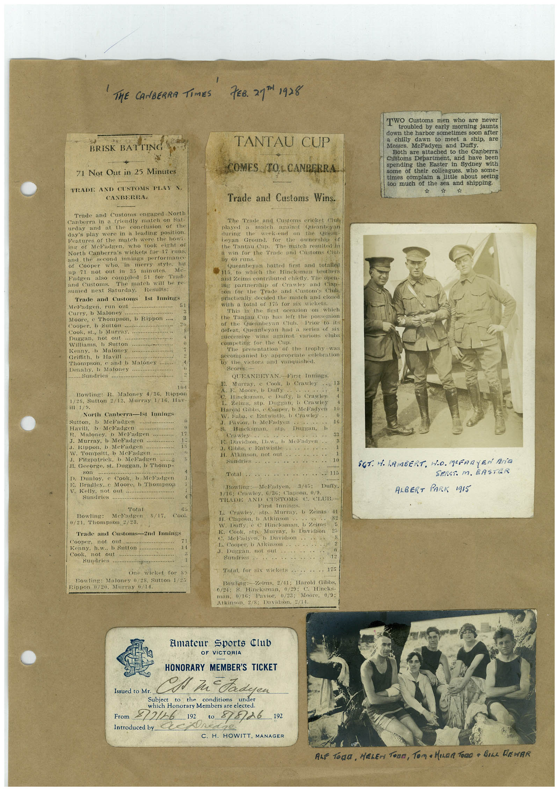

Book 1 · scan 012


Description
Transcription
Context
Review notes
Compare the machine draft with the scan. Handwriting and names need human review.
Artifacts
Edit the artifacts field in this note’s frontmatter to change these records. This summary is generated.
B01-S012-A01 — Newspaper clipping, Photo & Handwritten note — Book 1, scan 012
Types: Newspaper clipping, Photo, Handwritten note
Scope: Whole scanned page; individual items can be split out during review.
Caption: Not mapped yet.
Caption source: Not recorded yet.
Caption status: unmapped
Machine transcription
' THE CANBERRA TIMES 7EB. 217H1928 BRISK BATTING 71 Not Out in 25 Minutes TRADE AND CUSTOMS PLAS CANBERRA. Trade and Customs engaged North Canberra in a friendly mateh on Sat- urday and at the conclusion of the day's play were in a leading position. Features of the match were the bout- ine of Meladgen, who took eight or North Canberra's wickets for 17 runs. and the second innings performance of Cooper in merry styte. hit up 71 not out in 35 minutes. Mc. Padgen also compiled 5l for Tradi and Customs. The match will be re- sumed next Saturday. Results: Trade and Customs Ist Innings Meladgen, run out ..... Comb Me............ Moore, e Thompson, b Rippon Cooper, b Sutton: Cook, st., b Murray. Durgan. not onl Williams, b Sutton Kenny, b Maloney Thompson, c and b Maloney Denav b Maloney.......... .....sunoes.... 104 Rowling: R. Maloney 4/36, Rippon 1/28, Sutton 2/12, Murray 1/16, Har- North Canberra-Ist Innings Sutton, b Meladgen Havill, b MeFadgen Maloney, b McFadgen J. Murray, b MeFadgen J. Kippon. DVICE daba W. tomosit. o Meradeen.. Fitzpatrick. b Meladgen B. Geeorge, st. Duggan, b Thomp- son B. Dunloy. Cook, b MeFadgen Bradley. e Moore, b Thompson V. Kelly, not out Sundries ....... Total Bowling: Mcladgen 0/21, Thompson 2/23. 65 S/17, Cool Trade and Customs-2nd Innings Cooper, not out Kenny, h.w.. b Sutton Cook, not out. Sundries o One wicket for Bowling: Maloney 0/28, Sutton 1/25 Rippon 0/20. Murray 0/14. TANTAU CUP COMES /TOL CANBERRA. Trade and Customs Wins. The Trade and Customs cricket Clut played match against Queanheyan during the week-end on the heyan Ground. for the ownersit of the antu in. The match resuited in a win for the Trade and Customs Cinh By 60 runs. Queanbeyan batted first and totalled 11b, to which the Hincksman brothers and Zeims contributed chiefly. The open- ing partnership of Crawley and Clap- COTTON Trade and Custom's Club. practically decided the match and closed with a total of 175 for six wickets. This is the first occasion on which the Tantau Cup has left the possession of the Queanbeyan Club. defeat, Queanbeyan had a series of six successive wins against various clubs competing for the Cup: The presentation of the trophy was accompanied by appropriate celebration By the victors and vanquished. Scores: QUEANBEYAN. First Innings. B. Marray. e Cook, b Crawley A. F. Moore, b Dully C. Hineksman, e Dully. D Crawley L. Zelnis, stp. Duggan, b Crawles Harold Gibbs, e Cooper. b MeFadyen W. Saba, e Entwistle, b Crawley J. Pavior. b McFadven Hineksman, ost p. Crawley E. Davidson, Lb.w., b MeFadyen 3. Gibbs, © Intwistle H. Atkinson, not out Sundries Total .. 115 Bowling: McFadyen. Duffy. 1/10: Crawley, 6/36; Clapson, 0/9. TRADE AND CUSTOMS C CLUB. First Innings. Murray. b Zeims H. Clapson. D Atkinson.. W. Dully. e CHineksman. b Zeims K. Cook Stp. Murmy, b Davidson Mebadyen, b Davidson L. Cooper. b Atlinson.. J. Duggan. not out Sundries 12 Total, for six wiekets• 175 Bowling: Weims, 2/41: Harold Gibbs, 0/24: S. Hineksman, 0/29; C. Hincks- man. 0716; Pavior. 0/23; Moore, 0/9: Atkinson, 2/8: Davidson, 2/11. TWO Customs men who are never troubled by early morning jaunts down the harbor sometimes soon after a chilly dawn to meet a ship, are Messrs. McFadyen and Duffy. Both are attached to the Canberra Customs Department, and have been spending the Easter in Sydney with some of their colleagues, who some- times complain a little about seeing too much of the sea and shipping. SOT. 1 LAMBERT. NO. MeERAYEN Ara SEAST. M. BASTER ALBERT PARK 1915 Elmateur sports Club OF VICTORIA HONORARY MEMBER'S TICKET Issued to Mr. Ta d Subject the conditions under which Honorary Members are elected. From 212/26 192 10 8/8/26 192 Introduced by. C. H. HOWITT, MANAGER ALF TODa, HELEN TORE, TOM + HeaR TORO a BILe LEWAR